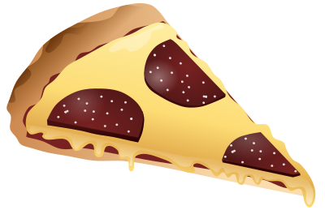

Pizza
:max_bytes(150000):strip_icc():format(webp)/how-to-make-thin-crust-pizza-dough-58f5a5c5d4d74075a80e60e2df490dd1)
 Pizza is another favorite dish of mine to make.
Ingredients
- Pizza Dough
- 2 cups Flour
- .5 cups Water
- 1 packet of Yeast
- 1 tsp Sugar
- Olive oil
- 1 large egg
- 24 oz can Pizza sauce
- 1 cup Shredded mozzarella cheese
Recipe
- Activate the yeast with sugar and water
- Make the dough
STOP, before you proceed, pre-heat your oven to 350 degrees Fahrenheit.
- Knead the dough
- Roll the dough into a circle